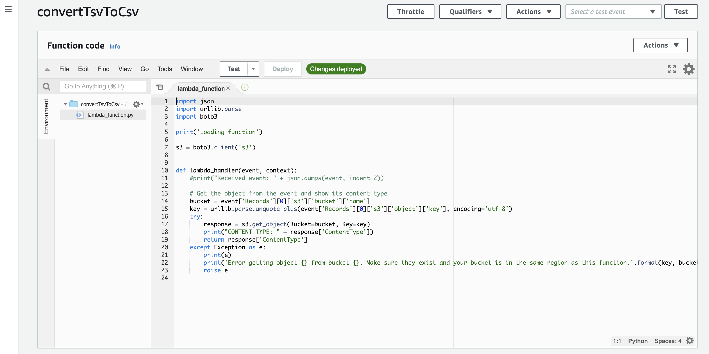

Lab: Event-Driven Computing
Event-driven computing, or serverless computing, is premised upon computing events occuring only when triggered. This
eliminates idle compute resources, and removes the need to create and manage infrastructure running 24/7.
This lab introduces the basics of even-driven computing by creating an AWS Lambda function that is triggered upon the
arrival of a new file within an S3 bucket. You will use a predefined template to launch this solution, but will then be
able to customize and extend the operations of the Python3 Lambda function.
Setup
- Sign into your AWS account. Be sure you are in the US East 1 (Virginia) region.
- Navigate to the S3 service and create a bucket, noting the name of your bucket.
- Open this page to customize a pre-defined blueprint for your Lambda function. This blueprint is named
blueprint s3-get-object-python.
- In the Basic Information section, give your function a name.
- For execution role, let AWS create a new one using policy templates. Provide a name for the role it will create. (A single policy template should already be selected beneath that.)
- In the S3 Trigger section, select the bucket you created above.
- Leave the "Event Types" as-is.
- For the "Prefix" field, enter "incoming"
- For the "Suffix" field, you can either leave it blank or put a data suffix such as .csv, .tsv, .json. Specifying a suffix means your Lambda function will only be triggered when files with that suffix are posted to your bucket.
- Leave the function code as it appears. Click on "Create Function".

Edit, Test and Iterate
- You should now see an editing console like the above image.
- Double-click on the function that has been created for you, named
lambda_function.py.
- To orient you a bit,